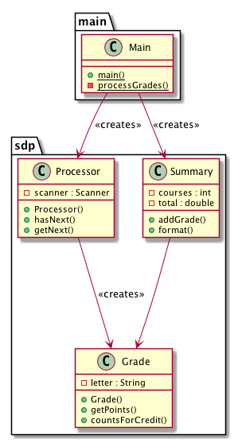
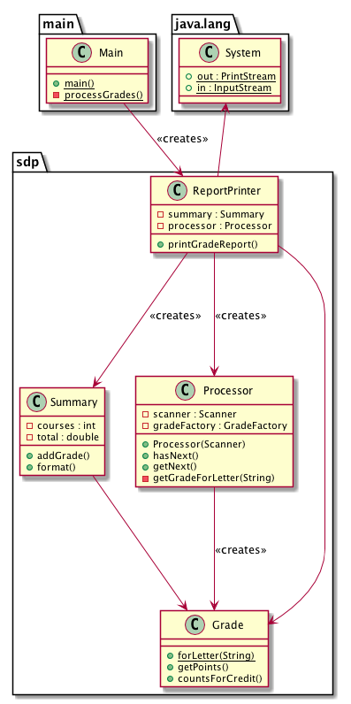
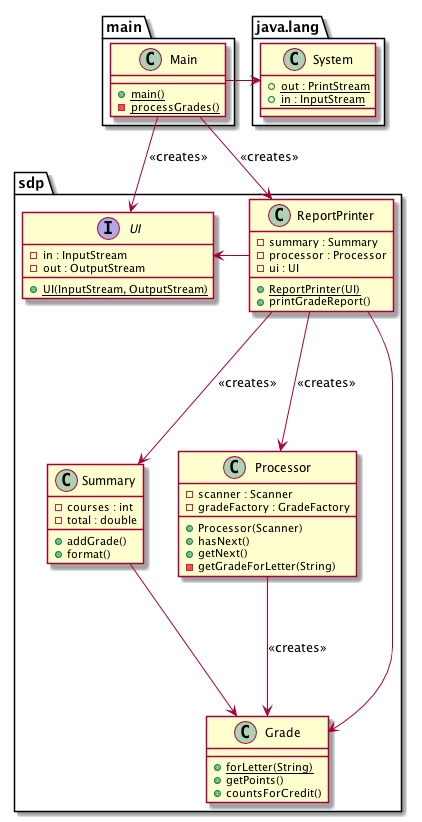

Interjecting segments of the SOLID principles video (only available in class or by purchase).
TODO: Add visual example
11:15-20:05 the source code is the design
20:05-30:35 design smells: ridigity, fragility, immobility, viscosity, needless complexity
30:35-37:30 examples of code rot
37:30-39:19 how to prevent the code from rotting
39:15-43:35 dependency inversion
This is the initial version of our grading app in diagram form.

Let us change the code a little bit. Instead of having Main do some of the work in its processGrades method, we want Main to simply create a ReportPrinter object, which will then create a Processor class instance and a Summary class instance, and it then uses the processor to process grades and add them to a summary, then finally print out the summary. The diagram might look as follows:

As it stands, we cannot really change where the input is coming from and where the output is going to. In order to do that, we would need to change our ReportPrinter class. But imagine we have a UI class, which contains a pair of input and output streams. Then Main could pass this pair to the ReportPrinter as an argument, then the reportPrinter can use the streams there instead of relying on standard input and output. This is how it would look like in diagram form:

We can now freely change the UI for a ReportPrinter by changing the parameter we pass to the ReportPrinter.
Question: Can we use this system in a situation where our data entries are stored in some HTML file? What design change do we need to make to allow that to happen?
What if we want to be able to “print” the report in various forms, e.g. in Excel, or to a graphical interface, or in speech form?
43:35-46:45 the truth about OO
o.f(x), compared to f(o, x)? How should we be interpreting it?46:45-48:48 dependency management
48:48-51:23 summary